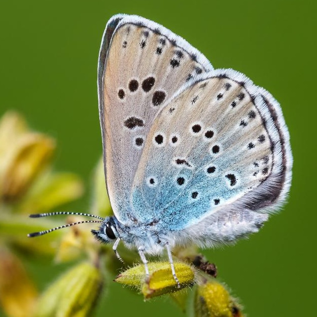
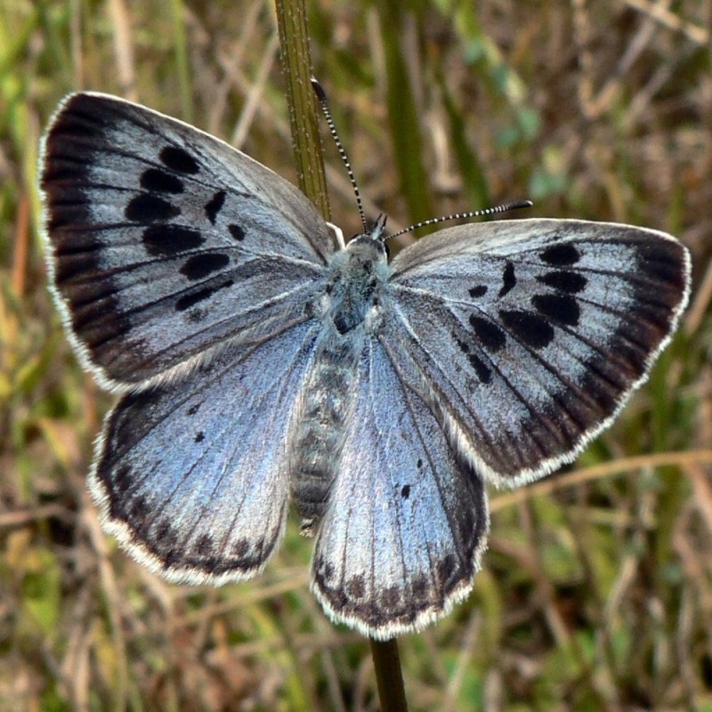

Side view

Dorsal view
Phengaris arion
Common name
Large Blue
Deutscher Name
Quendel-Ameisenbläuling {thyme (ants) blue}
Family
Lycaenidae
Family common name
Gossamer-winged Butterflies
On the wing
Mid-June - August
one generation
Habitat
Nutrient-poor, dry and sunny grasslands.
Larval host:
The eggs are laid on
Thymus
species and
Origanum vulgare
where the young caterpillars live. Later, the caterpillar lives in ant nests (
Myrmica sabuleti
), where they also hibernate.
Range Map
Seasonality